산림기사 (2021-05-15 기출문제)
1과목: 조림학
1. 가지치기에 대한 설명으로 옳은 것은?
- 활엽수종의 지융부를 제거하면 안된다.
- 생장휴지기에는 가급적 실시하지 않는다.
- 수간 상부보다 하부의 비대생장을 촉진 시킨다.
- 가지치기 작업으로 인해 부정아는 생성되지 않는다.
(정답률: 80%)

2. 어린나무가꾸기에 대한 설명으로 옳은 것은? (문제 오류로 가답안 발표시 4번이 답안으로 발표되었으나, 확정답안 발표시 2번, 4번이 정답 처리 되었습니다. 여기서는 가답안인 4번을 누르면 정답 처리 됩니다.)
- 조림목은 제거하지 않는다.
- 간벌 작업 이전에 실시한다.
- 생육 휴면기인 겨울철이 적정시기이다.
- 일반적으로 수관경쟁이 시작되고 조림목의 생육이 저해되는 시점이 적정 시기이다.
(정답률: 40%)
3. 체내에서 이동이 용이하여 성숙 잎에서 먼저 결핍증이 나타나는데, 잎이 검은 반점과 황화현상이 나타나고, 결핍 시 뿌리썩음병에 잘 걸리게 되는 무기영양소는?
- 철
- 칼슘
- 질소
- 칼륨
(정답률: 55%)
4. 풀베기작업을 두 번하고자 할 때 첫 번째 작업 시기로 가장 적당한 것은?
- 1~3월
- 3~5월
- 5~7월
- 7~9월
(정답률: 75%)
5. 음엽과 비교한 양엽의 특성으로 옳은 것은?
- 잎이 넓다.
- 광포화점이 낮다.
- 책상 조직의 배열이 빽빽하다.
- 큐티클층과 잎의 두께가 얇다.
(정답률: 63%)
6. 다음 ( )안에 들어갈 용어로 올바르게 나열한 것은?
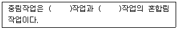
- 교림, 죽림
- 교림, 왜림
- 죽림, 순림
- 죽림, 왜림
(정답률: 89%)
7. 종자를 건조한 상태로 저장하여도 발아력이 크게 손상되지 않는 수종으로만 올바르게 나열한 것은?
- 목련, 칠엽수
- 편백, 삼나무
- 밤나무, 가시나무
- 신갈나무, 가래나무
(정답률: 58%)
8. 묘목을 식재할 때 뿌리돌림 시기로 가장 적합한 것은?
- 상록활엽수종: 한겨울
- 상록침엽수종: 7~8월 상순
- 낙엽수종: 11~2월 상순, 혹은 2~3월 상순
- 수종마다 큰 차이가 없고 연중 어느 때든지 적합하다.
(정답률: 71%)
9. 난대 수종으로 일반적으로 온대 중부이북에서 조림하기 어려운 수종은?\
- Quercus acuta
- Picea jezoensis
- Abies holophylla
- Pinus koraiensis
(정답률: 58%)
10. 삽목 발근이 용이한 수종으로만 올바르게 나열한 것은?
- 감나무, 자작나무
- 백합나무, 사시나무
- 꽝꽝나무, 동백나무
- 두릅나무, 산초나무
(정답률: 66%)
11. 비료목에 해당하는 수종으로만 올바르게 나열한 것은?
- 자귀나무, 가시나무, 백합나무
- 자귀나무, 오리나무, 족제비싸리
- 오리나무, 졸참나무, 물푸레나무
- 아까시나무, 나도밤나무, 물푸레나무
(정답률: 74%)
12. 종자 결실을 촉진하기 위해 일반적으로 사용하는 방법이 아닌 것은?
- 충분한 관수
- 단근 작업 실시
- 인산 및 칼륨 시비
- 임분의 입목밀도 조절
(정답률: 57%)
13. 택벌에 대한 설명으로 옳지 않은 것은?
- 양수 수종의 갱신에 유리하다.
- 기상 피해에 대한 저항력이 높다.
- 임관이 항상 올폐된 상태를 유지한다.
- 경관적 가치가 다른 작업종에 비해 높다.
(정답률: 73%)
14. 지베렐린에 대한 설명으로 옳지 않은 것은?
- 알칼리성이다.
- 신장 생장을 촉진한다.
- 일반적으로 지베렐린이 처리된 수목은 개화량가 개화기간이 길어진다.
- gibbane의 구조를 가진 화합물이며 일반적으로 GA3라고 표기한다.
(정답률: 67%)
15. 순림과 비교한 혼효림의 장점으로 옳지 않은 것은?
- 생물의 다양성이 높다.
- 환경적 기능이 우수하다.
- 병해충에 대한 저향력이 크다.
- 무육작업과 살림경영이 경제적이다.
(정답률: 84%)
16. 수목의 증산작용에 대한 설명으로 옳지 않은 것은?
- 잎의 온도를 낮추어 준다.
- 무기염의 흡수와 이동을 촉진시키는 역할을 한다.
- 식물의 표면으로부터 물이 수증기의 형태로 방출되는 것을 의미한다.
- 증산작용을 할 수 없는 100%의 상대습도에서는 식물이 자라지 못한다.
(정답률: 75%)
17. 파종상에서 1년, 이식상에서 2년, 그 뒤 1번 더 이식한 실생묘의 표시는?
- 1/2 - 1
- 1 – 1/2
- 1 – 2 - 1
- 2 – 1 – 1
(정답률: 86%)
18. 다음 조건에서 종자의 효율은?
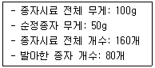
- 25%
- 50%
- 75%
- 100%
(정답률: 66%)
19. 모수작업에 의한 갱신이 가장 유리한 수종은?
- Juglans regia
- Pinus densiflora
- Pinus koraiensis
- Quercus acutissima
(정답률: 64%)
20. 소나무와 곰솔을 비교한 설명으로 옳지 않은 것은?
- 곰솔의 침엽은 굵고 길다.
- 소나무의 겨울눈은 굵고 회백색이다.
- 소나무의 수피는 적갈색이고 곰솔은 암흑색이다.
- 침엽 수지도가 곰솔은 중위이고 소나무는 외위이다.
(정답률: 69%)
2과목: 산림보호학
21. 다음 설명에 해당하는 바람이 종류는?
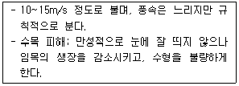
- 폭풍
- 염풍
- 육풍
- 주풍
(정답률: 77%)
22. 솔잎혹파리를 방제하는 방법으로 옳지 않은 것은?
- 포식성 조류인 박새, 곤줄박이를 보호한다.
- 간벌하여 임내를 건조시킴으로써 번식을 억제한다.
- 번데기가 낙하하는 11월 하순~12월 상순에 카보퓨란입제를 지면에 살포한다.
- 피해가 심한 임지에서는 산란 및 부화 최성기에 디노테퓨란 액제를 수간 주입한다.
(정답률: 56%)
23. 수목의 외과적 치료 방법에 대한 설명으로 옳은 것은?
- 나무주사를 이용하는 방법이다.
- 부후병, 뿌리썩음병에는 효과가 없다.
- 뽕나무 오갈병, 오동나무 빗자루병에는 효과가 없다.
- 살균제 성분을 이용하는 수목 피해를 예방하는 것이다.
(정답률: 67%)
24. 산성비의 산도에 해당하는 것은?
- pH 5.0~7.0
- pH 5.6~7.5
- pH 5.6이하
- pH 7.0이상
(정답률: 71%)
25. 밤나무혹벌이 주로 산란하는 곳은?
- 밤나무의 눈
- 밤나무의 뿌리
- 밤나무의 잎 뒷면
- 밤나무 주변 지피물
(정답률: 71%)
26. 소나무류 잎녹병균 중간기주가 아닌 것은?
- 잔대
- 황벽나무
- 쑥부쟁이
- 졸참나무
(정답률: 54%)
27. 박쥐나방에 대한 설명으로 옳지 않은 것은?
- 어린 유충은 초본을 가해한다.
- 성충은 박쥐처럼 저녁에 활발히 활동한다.
- 성충은 나무에 구멍을 뚫어 알을 산란한다.
- 1년 또는 2년에 1회 발생하며 알로 월동한다.
(정답률: 56%)
28. 상륜에 대한 설명으로 옳은 것은?
- 상해의 피해 중 만상의 피해로 나타나는 일종의 위연륜을 말한다.
- 지형적으로 습기가 낮고, 높은 지대, 소택지등에 상륜의 피해가 많다.
- 조상의 피해로 나타나는 현상으로 일시 생장이 중지되었을 때 나타난다.
- 고립목이나 산림의 임연부에서 한겨울 밤수액이 저온으로 얼면서 나타나는 피해현상이다.
(정답률: 56%)
29. 봄에 진딧물의 원동란에서 부화한 애벌레를 무엇이라 하는가?
- 간모
- 유성생식층
- 산란성 암컷
- 산자성 암컷
(정답률: 67%)
30. 파이토플라스마에 대한 설명으로 옳지 않은 것은?
- 인공 배양이 불가능하다.
- 원핵생물과 진핵생물의 중간적 존재이다.
- 세포벽이 없으므로 구형 또는 불규칙한 모양이다.
- 파이토플라스마에 의한 수목병은 대부분 곤충에 의해 점염된다.
(정답률: 50%)
31. 알락하늘소를 방제하는 방법으로 옳지 않은 것은?
- Bt균이나 핵다각체바이러스를 살포한다.
- 성층이 우화하는 시기에 적용 약제를 수관에 살포한다.
- 유층을 구제하기 위하여 침입공에 적용약제를 주입한다.
- 철사를 침입공에 넣어 목질부에 서식하고 있고 유충을 찔러 죽인다.
(정답률: 53%)
32. 미국흰불나방은 1년에 몇 회 우화하는가?
- 1회
- 2~3회
- 4~5회
- 6회
(정답률: 67%)
33. 희석하여 살포하는 약제가 아닌 것은?
- 액제
- 입제
- 수화제
- 캡슐현탁제
(정답률: 68%)
34. 밤바구미에 대한 설명으로 옳지 않은 것은?
- 경제적 피해 수종은 주로 밤나무이다.
- 밤껍질 밖으로 배설물을 방출하므로 쉽게 알 수 있다.
- 유충이 밤이나 도토리의 과육을 식해하여 피해를 준다.
- 땅 속에서 유충의 형태로 월동한 후에 번데기가 된다.
(정답률: 80%)
35. 아밀라리아뿌리썩음병에 대한 설명으로 옳은 것은?
- 주로 천공성 곤충으로 전반된다.
- 침엽수와 활엽수에 모두 발생한다.
- 표징으로 갈색의 파상땅해파리버섯이 있다.
- 병원균은 균핵으로 월동하여 이듬해에 1차전염원이 된다.
(정답률: 64%)
36. 오동나무 탄저병을 방제하는 방법으로 옳지 않은 것은? (문제 오류로 가답안 발표시 3번이 답안으로 발표되었으나, 확정답안 발표시 1번, 3번이 정답 처리 되었습니다. 여기서는 가답안인 3번을 누르면 정답 처리 됩니다.)
- 거름주기와 가지치기를 철저히 한다.
- 실생묘의 양묘에서는 토양소독을 실시한다.
- 병든 부분을 제거하고 소독 후 도포제를 처리한다.
- 짚으로 토양을 피복하여 빗물에 흙이 튀지 않게 한다.
(정답률: 21%)
37. 세균에 의한 수목병에 해당하는 것은?
- 녹병
- 탄저병
- 뿌리혹병
- 소나무재선충병
(정답률: 73%)
38. 주로 단위생식으로 번식하는 해충은?
- 솔나방
- 밤나무혹벌
- 솔잎혹파리
- 북방수염하늘소
(정답률: 60%)
39. 밤나무 줄기마름병을 방제하는 방법으로 옳은 것은?
- 침투 이행성 살균제를 피해목 수간에 주입한다.
- 외가닥 RNA가 존재하는 저병원성 균주를 살포한다.
- 박쥐나방에 의한 피해를 줄이기 위하여 살충제를 살포한다.
- 상습 발생지에서는 장마 후부터 10일 간격으로 살균제를 3~4회 살포한다.
(정답률: 36%)
40. 오리나무 갈색무늬병을 방제하는 방법으로 옳지 않은 것은?
- 윤작을 피한다.
- 종자를 소독한다.
- 솎아주기를 한다.
- 병든 낙엽은 모아 태운다.
(정답률: 76%)
3과목: 임업경영학
41. 산림 평가와 관련된 산림의 특수성에 대한 설명으로 옳지 않은 것은?
- 관광 산업으로 산지 전용 등 산림에 대한 가치관이 다양화되고 있다.
- 산림은 자연적으로 장기간에 걸쳐 생산된 것이므로 완전히 동형ㆍ동질인 것은 없다.
- 산림 평가에 있어서 과거와 장래에 걸친 여러 문제는 중요한 평가 인자로 고려하지 않는다.
- 임업의 대상지로서 산림은 수익을 예측하기가 어렵고 적합한 예측 방법도 확립되어 있지 않다.
(정답률: 73%)
42. 유령림의 임목을 평가하는 방법으로 가장 적합한 것은?
- Glaser 법
- 비용가법
- 기망가법
- 매매가법
(정답률: 74%)
43. 다음 조건에 따른 자본에 귀속하는 소득은?
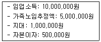
- 3,500,000원
- 4,000,000원
- 4,500,000원
- 10,500,000원
(정답률: 49%)
44. 임지기망가에 대한 설명으로 옳지 않은 것은?
- 조림비가 클수록 임지기망가가 최대로 되는 시기가 늦어진다.
- 이율이 클수록 임지기망가가 최대로 되는 시기가 빨리 온다.
- 간벌수익이 클수록 임지기망가가 최대로 되는 시기가 빨리 온다.
- 지위가 양호한 임지일수록 임지기망가가 최대로 되는 시기가 늦어진다.
(정답률: 66%)
45. 다음 조건을 활용하여 Austrian 공식으로 구한 표준연벌량은?
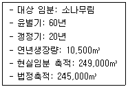
- 10,500m3
- 10,700m3
- 11,100m3
- 14,500m3
(정답률: 46%)
46. 어떤 잣나무의 흉고형수가 0.4702, 흉고직경이 20cm, 수고가 10m인 경우 형수법에 의한 입목재적은?
- 0.147m3
- 0.5906m3
- 1.4764m3
- 2.9529m3
(정답률: 55%)
47. 임분 재적 측정 방법으로 표본조사법 중 선표본점법에 해당하는 것은?
- 임의 추출법
- 층화 추출법
- 부차 추출법
- 계통적 추출법
(정답률: 62%)
48. 자연휴양림 안에 설치할 수 있는 시설의 규모에 대한 설명으로 옳은 것은?
- 3층 이상의 건축물을 건축하면 안 된다.
- 일반음식점영업소 또는 휴게음식점영업소의 연면적은 900m2 이하로 한다.
- 자연휴양림시설 중 건축물이 차지하는 총 바닥면적은 10,000m2 이하가 되도록 한다.
- 자연휴양림시설의 설치에 따른 산림의 형질변경 면적은 10,000m2 이하가 되도록 한다.
(정답률: 49%)
49. 입목의 직경을 측정하는데 사용하는 도구가 아닌 것은?
- 윤척(caliper)
- 직경 테이프(diameter tape)
- 빌티모아 스티크(biltimore stick)
- 아브네이 핸드 레블(abney hand level)
(정답률: 68%)
50. 공ㆍ사유림 산림경영계획을 작성하기 위한 임황조사 항목이 아닌 것은?
- 지위
- 경급
- 임령
- 총축적
(정답률: 70%)
51. 산림투자의 경제성 분석방법이 아닌 것은?
- 회수기간법
- 순현재가치법
- 외부수익률법
- 편익비용비율법
(정답률: 51%)
52. 다음 조건에서 시장가역산법을 적용한 소나무 원목의 임목가는?
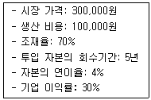
- 55,000원
- 70,000원
- 95,000원
- 125,400원
(정답률: 49%)
53. 산림의 생산기간에 대한 설명으로 옳지 않은 것은?
- 회귀년이 짧은 경우 단위면적에서 벌채될 재적이 많다.
- 벌기령과 벌채령이 일치할 때 벌기령을 법정벌기령이라 한다.
- 개량기는 개벌작업을 하는 산림에 적용되는 기간이며 정리기라고도 한다.
- 윤벌기란 보속작업에 있어서 한 작업급내의 모든 임분을 1순벌하는데 필요한 기간이다.
(정답률: 63%)
54. 임업경영의 지표분석 중 수익성 분석 항목이 아닌 것은?
- 자본순수익
- 자본이익률
- 토지회전율
- 자본회전율
(정답률: 63%)
55. 우리나라 임업 경영의 특성이 아닌 것은?
- 생산기간이 대단히 길다.
- 임업은 공익성이 크므로 제한성이 많다.
- 임업노동은 계절적 제약을 크게 받지 않는다.
- 육성임업과 채취임업은 함께 실시하기 어렵다.
(정답률: 65%)
56. 자연휴양림의 지정권자는?
- 산림청장
- 시ㆍ도지사
- 시장ㆍ군수
- 국립자연휴양림관리소장
(정답률: 67%)
57. 산림경영의 지도원칙 중 보속성의 원칙이 아닌 것은?
- 목재 생산의 보속
- 임업기술 유지의 보속
- 생산자본 유지의 보속
- 목재수확 균등의 보속
(정답률: 61%)
58. 법정림을 구성하기 위한 법정상태의 요건에 해당되지 않는 것은?
- 법정축적
- 법정생장량
- 법정노동력
- 법정임분배치
(정답률: 66%)
59. 이령림의 연령을 측정하는 방법이 아닌 것은?
- 벌기령
- 본수령
- 재적령
- 표본목령
(정답률: 48%)
60. 다음 손익분기점 분석 공식에서 q가 의미하는 것은? (단, TC는 총비용, FC는 총고정비, v는 단위당 변동비)(오류 신고가 접수된 문제입니다. 반드시 정답과 해설을 확인하시기 바랍니다.)
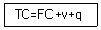
- 손실비
- 총수익
- 판매가격
- 손익분기점의 생산량
(정답률: 53%)
4과목: 임도공학
61. 배향곡선지인 경우 길어깨와 옆도랑의 너비를 제외한 임도의 유효너비의 기준은?
- 3m
- 5m
- 6m
- 10m
(정답률: 62%)
62. 산악지대의 임도노선 선정 형태로 옳지 않은 것은?
- 사면임도
- 능선임도
- 계곡임도
- 작업임도
(정답률: 70%)
63. 수확한 임목을 임내에서 박피하는 이유로 가장 거리가 먼 것은?
- 운재작업 용이
- 병충해 피해방지
- 신속한 원목 건조
- 공장에서 작업하는 경우보다 생산원가 절감
(정답률: 68%)
64. 등고선에 대한 설명으로 옳지 않은 것은?
- 절벽 또는 굴인 경우 등고선이 교차한다.
- 최대경사의 방향은 등고선에 평행한 방향이다.
- 지표면의 경사가 일정하면 등고선 간격은 같고 평행하다.
- 일반적으로 등고선은 도중에 소실되지 않으며 폐합된다.
(정답률: 68%)
65. 대피소를 설치할 때 유효길이 기준으로 옳은 것은?
- 5m 이상
- 10m 이상
- 15m 이상
- 300m 이상
(정답률: 72%)
66. 임도의 종단 기울기에 대한 설명으로 옳지 않은 것은?
- 최소 기울기는 3% 이상으로 설치한다.
- 종단 기울기를 낮게 하면 시설비는 증가될 수 있다.
- 종단 기울기를 높게 하면 임도우회율이 적어진다.
- 보통 자동차가 설계속도의 90%이상 정도로 오를 수 있도록 설정한다.
(정답률: 64%)
67. 다음 ( )안에 해당되는 것을 순서대로 올바르게 나열한 것은?
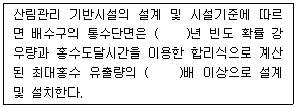
- 50, 1.2
- 50, 1.5
- 100, 1.2
- 100, 1.5
(정답률: 70%)
68. 사면붕괴 및 사면침식 등 임도 비탈면의 유지관리를 위한 표면유수 유입방지용 배수시설은?
- 맹거
- 종배수구
- 횡배수구
- 산마루 측구
(정답률: 49%)
69. 다음과 같은 조건에서 매튜스식(Matthews method)에 의한 적정임도밀도는?
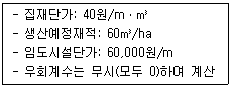
- 10m/ha
- 15ha
- 20ha
- 50ha
(정답률: 31%)
70. 다음 그림에서 각 꼭지점이 높이(m)를 나타낼 때 점고법을 이용한 전체 토량과, 절토량과 성토량이 균형을 이루는 시공면고(높이)는? (단, 각 구역의 면적은 32m2로 동일)
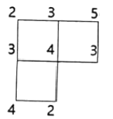
- 전체 토량 208m3, 시공면고 2.2m
- 전체 토량 320m3, 시공면고 2.2m
- 전체 토량 208m3, 시공면고 3.3m
- 전체 토량 320m3, 시공면고 3.3m
(정답률: 43%)
71. 임도의 유지 및 보수에 대한 설명으로 옳지 않은 것은?
- 노체의 지지력이 약화되었을 경우 기층 및 표층의 재료를 교체하지 않는다.
- 노면 고르기는 노면이 건조한 상태보다 어느 정도 습윤한 상태에서 실시한다.
- 결빙된 노면은 마찰저항이 증대되는 모래, 부순돌, 석탄재, 염화칼슘 등을 뿌린다.
- 유토, 지조와 낙엽 등에 의하여 배수구의 유수단면적이 적어지므로 수시로 제거한다.
(정답률: 74%)
72. 임도 측량 시 측선 AB의 방위각이 80°이고 길이가 30m라면 AB사이의 위거 및 경거는?
- 위거 5.2m, 경거 29.5m
- 위거 29.5m, 경거 5.2m
- 위거 10.4m, 경거 59.1m
- 위거 59.1m, 경거 10.4m
(정답률: 37%)
73. 교각법에 의한 임도 설계 시 평면도의 곡선제원표에 포함되지 않는 것은?
- 교각점
- 접선길이
- 중앙종거
- 곡선반지름
(정답률: 54%)
74. 임도 양쪽으로부터 임목이 집재될 때 평균 집재거리는 임도간격의 몇 배인가?
- 1/5
- 1/4
- 1/3
- 1/2
(정답률: 54%)
75. 다음 종단측량 야장에서 측점간 거리가 20m이고 계획고를 +4% 경사(상향)로 할 때 측점 2에서의 절ㆍ성토고는?
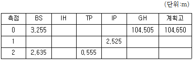
- 절토고 0.955m
- 성토고 0.955m
- 절토고 1.022m
- 성토고 1.022m
(정답률: 23%)
76. 임도의 비탈면 기울기를 나타내는 방법에 대한 설명으로 옳은 것은?
- 비탈어깨와 비탈밑 사이의 수직높이 1에 대하여 수평거리가 n일 때 1:n으로 표기한다.
- 비탈어깨와 비탈밑 사이의 수평거리 1에 대하여 수직높이가 n일 때 1:n으로 표기한다.
- 비탈어깨와 비탈밑 사이의 수평거리 100에 대하여 수직높이가 n일 때 1:n으로 표기한다.
- 비탈어깨와 비탈밑 사이의 수직높이 100에 대하여 수평거리가 n일 때 1:n으로 표기한다.
(정답률: 67%)
77. 롤러 표면에 돌기를 부착한 것으로 점착성이 큰 점성토 다짐에 적합하며 다짐 유효깊이가 큰 장비는?
- 탠덤롤러
- 탬핑롤러
- 타이어롤러
- 머캐덤롤러
(정답률: 75%)
78. 일반지형의 임도의 설계속도가 30km/시간 일 때 최소곡선반지름의 설치 기준은 몇 m이상인가?
- 20
- 30
- 40
- 60
(정답률: 63%)
79. 임도의 곡선반지름이 15m, 차량의 앞면과 뒷차축과의 거리가 6m인 경우 곡선부에서의 나비넓힘(확폭량)은?
- 0.4m
- 1.0m
- 1.2m
- 2.5m
(정답률: 44%)
80. 아스팔트 포장과 비교하였을 때 시멘트 콘크리트 포장의 장점으로 옳은 것은?
- 평탄성이 좋다.
- 내마모성이 크다.
- 시공속도가 빠르다.
- 간단 공법으로 유지수선이 가능하다.
(정답률: 70%)
5과목: 사방공학
81. 사방댐의 위치 선정에 대한 설명으로 옳은 것은?
- 댐은 계상 및 양안에 암반이 존재해야 하며, 사력층 위에는 사방댐을 계획하면 안 된다.
- 지계의 합류점 부근에서 댐을 계획할 때는 일반적으로 합류점의 상류부에 위치를 선정한다.
- 유출토사 억지 목적의 댐은 퇴적지 하류에서 댐 상류부의 계상 기울기가 완만하고 계폭이 좁은 지점에 계획한다.
- 계단상으로 댐을 계획할 때는 첫 번째 댐의 추정 퇴사선이 기존의 계상 기울기를 자르는 점에 상류댐을 설치하도록 한다.
(정답률: 34%)
82. 황폐 계천에 설치하는 사방 공작물로 토사퇴적구역에 가장 적합한 것은?
- 사방댐
- 말뚝박기
- 모래막이
- 바자얽기
(정답률: 53%)
83. 빗물에 의한 토양이 침식되는 과정의 순서로 옳은 것은?
- 면상→우적→구곡→누구
- 우적→면상→구곡→누구
- 면상→우적→누구→구곡
- 우적→면상→누구→구곡
(정답률: 74%)
84. 사방용 수종에 요구되는 특성으로 옳지 않은 것은?
- 뿌리가 잘 자랄 것
- 가급적 양수 수종일 것
- 척악지의 조건에 적응성이 강할 것
- 생장력이 왕성하며 쉽게 번무할 것
(정답률: 77%)
85. 다음 설명에 해당하는 것은?
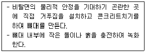
- 비탈힘줄박기
- 격자틀붙이기
- 콘크리트블록쌓기
- 콘크리트뿜어붙이기
(정답률: 68%)
86. 수제에 대한 설명으로 옳지 않은 것은?
- 상향수제는 길이가 가장 짧고 공사비가 적게 든다.
- 하향수제는 수제 앞부분의 세굴 작용이 가장 약하다.
- 유수의 월류 여부에 따라 월류수제와 불월류수제로 나눈다.
- 계류의 유심 방향을 변경하여 계안 침식을 방지하기 위해 계획한다.
(정답률: 57%)
87. 땅밀림과 비교한 산사태 및 산붕에 대한 설명으로 옳지 않은 것은?
- 강우 강도에 영향을 받는다.
- 주로 사질토에서 많이 발생한다.
- 징후의 발생이 많고 서서히 활동한다.
- 20°이상의 급경사지에서 많이 발생한다.
(정답률: 74%)
88. 매쌓기 높이가 1.5m일 때 기울기의 기준으로 옳은 것은?
- 흙쌓기의 경우 1:0.20
- 땅깎기의 경우 1:0.20
- 흙쌓기의 경우 1:0.30
- 땅깎기의 경우 1:0.30
(정답률: 62%)
89. 경사가 완만하고 상수가 없으며 유량이 적고 토사의 유송이 없는 곳에 가장 적합한 산복수로는?
- 떼붙임 수로
- 메쌓기 돌수로
- 찰쌓기 돌수로
- 콘크리트 수로
(정답률: 64%)
90. 물의 순환과 산림유역의 물수지에 대한 설명으로 옳지 않은 것은?
- 증발량과 증산량은 비슷하다.
- 물의 수문학적 순환은 강수량의 한계범위 내에서 이루어진다.
- 강수가 없는 동안에도 유역 내 저류되어 있는 물은 유출, 증발 및 증산에 의하여 감소한다.
- 유역 내에서 강수량은 저류량의 변화와 지하 유출을 무시하면 유출량, 증발량, 증산량의 합과 같다.
(정답률: 49%)
91. 산지사방 녹화공사에 해당하지 않는 것은?
- 조공
- 단끊기
- 단쌓기
- 등고선구공법
(정답률: 45%)
92. 황폐계류에 대한 설명으로 옳지 않은 것은?
- 유량의 변화가 적다.
- 계류의 기울기가 급하다.
- 유로의 길이가 비교적 짧다.
- 호우 시에 사력의 유송이 심하다.
(정답률: 68%)
93. 사면에 등고선 계단을 계획할 때 사면의 기울기가 45°, 면적이 1ha일 때 계단 간격을 1m로 한다면 평면적법에 의한 계단 연장은?
- 5,000m
- 8,000m
- 10,000m
- 15,000m
(정답률: 49%)
94. 사방댐의 높이가 4.5m일 때 총 수압의 합력작용선의 최대 높이는 밑면에서 몇 m 지점인가?
- 0.50
- 0.75
- 1.00
- 1.50
(정답률: 63%)
95. 땅속흙막이를 설치하는 주요 목적에 해당하는 것은?
- 누구침식의 발달을 방지한다.
- 빗물에 의한 침식을 방지한다.
- 산지 사면의 계단공사를 하기 위해 설치한다.
- 비탈다듬기와 단끊기 등에 의해 생산된 퇴적토사의 활동을 방지한다.
(정답률: 71%)
96. 물에 의한 토양의 침식 정도에 영향을 주는 인자로 가장 거리가 먼 것은?
- 강우량과 강우 강도
- 토양의 화학적 구조
- 사면의 길이와 경사도
- 지표 식생의 피복 상태
(정답률: 67%)
97. 임계 유속에 대한 설명으로 옳은 것은?
- 계상에 침식을 최대로 일으키는 최소 유속이다.
- 계상에 침식을 일으키지 않는 경우의 최대 유속이다.
- 어느 집수 유역에도 존재할 수 있는 최소 유속이다.
- 어느 집수 유역에서도 존재할 수 있는 최대 유속이다.
(정답률: 70%)
98. 해안방재림 조성용 묘목의 식재본수 기준은?
- 5,000본/ha
- 8,000본/ha
- 10,000본/ha
- 15,000본/ha
(정답률: 54%)
99. 사방댐의 표면처리나 돌쌓기 공사에 주로 사용되는 다듬돌의 규격은?
- 15cm×15cm×25cm
- 30cm×30cm×50cm
- 45cm×45cm×60cm
- 60cm×60cm×60cm
(정답률: 59%)
100. 황폐계천에서 유수에 의한 계안의 횡침식을 방지하고 산각의 안정을 도모하기 위하여 계류 흐름방향에 따라 축설하는 것은?
- 밑막이
- 골막이
- 바닥막이
- 기슭막이
(정답률: 58%)